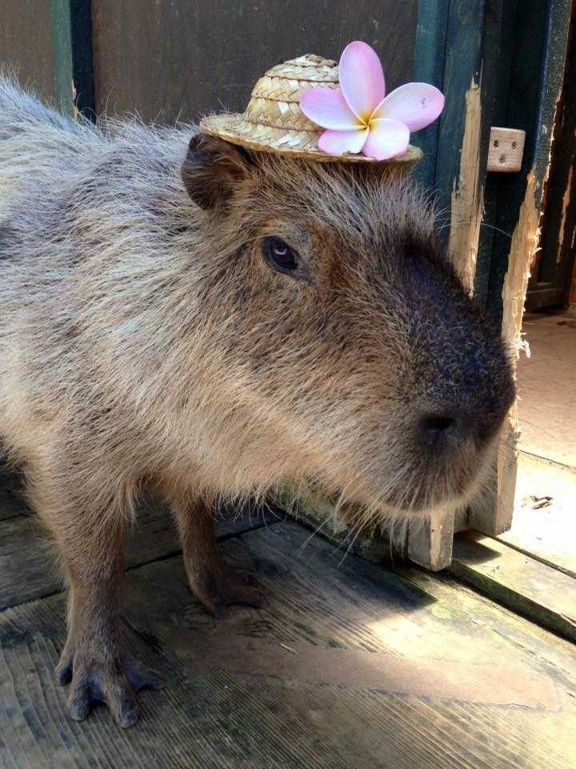

Capybara Basic Data
COMMON NAME: Capybara
SCIENTIFIC NAME: Hydrochoerus hydrochaeris
TYPE: Mammals
DIET: Herbivore
GROUP NAME: Herd
AVERAGE LIFE SPAN IN THE WILD: Up to 7 years
SIZE: 4.6 feet long: up to 2 feet high at shoulders
WEIGHT: 77 – 143 pounds
What Is A Capybara
Species members have a broad, deep muzzle; short ears and tail; small eyes set far back on the head;
and short limbs with partially webbed feet, the forefoot having four digits and the hind foot having three.
Because the capybara has a rather sparse coat, its skin is visible beneath the long, coarse hairs. The fur
is
reddish brown to grayish above and yellowish brown below. It is worth noted that unlike other rodents,
they have only one color.
The capybara lives in densely vegetated areas around ponds, lakes, rivers, marshes, and swamps.
Capybara Reproduction and Development
Species members breed throughout the year, but mating seems to peak just before the rainy season, the
time of which varies between regions.
Gestation reportedly can last either 149 or 156 days. There is usually only one litter each year, with,
typically, four young to a litter, although one subspecies, H. hydrochaeris isthmius, apparently gives
birth to an average of five young after a gestation period of 104 to 111 days.
Because capybaras have no nests, birth can occur anywhere within their habitat. Newborns weigh about
3.3 pounds (1.5 kg). Lactation lasts 16 weeks, although even during this time grass makes up a major
portion of the offspring’s diet. Both females and males reach sexual maturity at 15 months of age.
What Do Capybara Eat?
Typically, each family group includes one adult male and one or more females, with their young. Bachelor
males often band together in separate groups. Each day the capybara troops must travel long distances in
search of food. Yet they nearly always return to the same spot at night.
The capybara is active in the morning and evening, wallowing in mudholes and shallow water during the
hottest part of the day. In areas where it is frequently bothered by humans, however, the animal has
become nocturnal. When closely pursued, H. hydrochaeris enters the water, where it may swim to safety,
with only its nostrils, eyes, and ears exposed, or it may hide in floating vegetation, with only its
nostrils
exposed. The capybara can also swim totally submerged for long distances.
Species members are normally found in herds containing 20 individuals, although smaller groupings,
comprising only family members, are also seen. A typical group is headed by a dominant male and
possesses a hierarchy established and maintained by aggression and fighting. In addition to grasses, the
species also feeds on aquatic plants as well as grains, melons, and squashes.
Are Capybaras Endangered?
As a species, capybaras are not endangered, in fact they are classified as “least concern”. However,
in some parts, they experienced loss of habitat and the wild population is shrinking.
The capybara has also been hunted as an agricultural pest and for its valued meat and fur. In some places,
ranchers kill the creature just because it competes with cows and sheep for grass.
As a result of overhunting, capybaras have nearly disappeared in parts of their range. Consequently,
Venezuelan and Peruvian populations have shrunk, although the animal is still common throughout much
of South America.
Popularity and meme culture
In the early 2020s, capybaras became a growing figure of meme culture due to many factors, including the disturbances in Nordelta which led to them being comically postulated as figures of class struggle. Also, a common meme format includes capybaras in various situations with the song "After Party" by Don Toliver, leading to a tremendous growth in popularity. Due to a lyric in Toliver's song, capybaras are also associated with the phrase "Ok I pull up".
CAPYBARA FAQ
Capybara size: How big is a capybara
The capybara weighs between 59.5 and 174 pounds (27 to 79 kg) and has a combined head-and-body length of 40 to 50 inches (100 to 130 cm), a shoulder height of 20 inches (50 cm), and a vestigial tail.
Do capybaras make good pets?
They make great outside pets. Many people want to bring them in the house and try to “potty “train them. These are basically wild animals. They can be brought in if you want your rugs chewed, table legs gnawed, curtains pulled off the windows, and a possible mess in the floor. Outside they swim, run, eat and lounge in the sun during the day. Feeding time is a special time for then and for you. They will stand up and beg for corn, follow you around the yard and my pet would love to get in your lap. They bond with what there are raised with at the time. More times than none it will be you. The bathroom training is an outside pan. Capybaras are semi aquatic animals and require water for daily. Their skin requires water and warmth. The chewing is a natural thing for them. They have teeth at birth and the chewing is done to grind their teeth. If the teeth grow too quickly they will grow into the upper portion of the mouth and prevent their eating.
Do capybaras bite?
YES, can bite and will do so. It is their defense for protection. Just keep your fingers away from them and do not try to grab them quickly. They prefer to initiate the affection. Read more about why are capybaras so friendly?
Are capybaras aggressive?
ONLY if provoked by another capybara at he feeding pan. They are truly gentle giants.
Do capybaras dig?
NO, they do not dig like hogs. They will go under any possible opening and can squeeze through a small crack. If they get out it is very difficult to chase. They are really fast runners. They can turn on a dime. On occasion I have had one to climb a three foot chain link fence when the dominant male chased him.
Can capybaras be trained?
THE KEY is patience and repetitive behaviors. They respond to verbal calls, whistles and of course feed buckets. They also respond to their names as they get older. They twirl, run and stand on their hind legs for food.
How to feed a capybara?
They are GRASS lovers. They love fruits and vegetables. They drink milk replacer, puppy chow, cattle creeper pellets, rabbit pellets, rodent food, and bread.